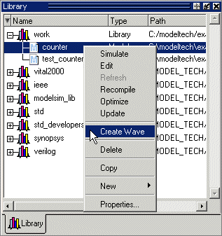
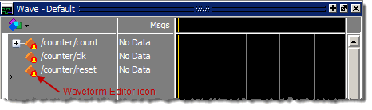

Here are the
basic steps for using waveform editor prior to loading a design.
Procedure
- Right-click a design unit
on the Library Window and select Create Wave.
Figure 1. Waveform Editor:
Library Window
- Edit the waveforms in the
Wave window. See Editing Waveforms for more details.
- Run the simulation (see Simulating Directly from Waveform Editor) or save the created waveforms
to a stimulus file (see Exporting Waveforms to a Stimulus File).
Results
After the first step, a Wave window
opens and displays signal names with the orange Waveform Editor
icon (Figure 2).
Figure 2. Results of
Create Wave Operation